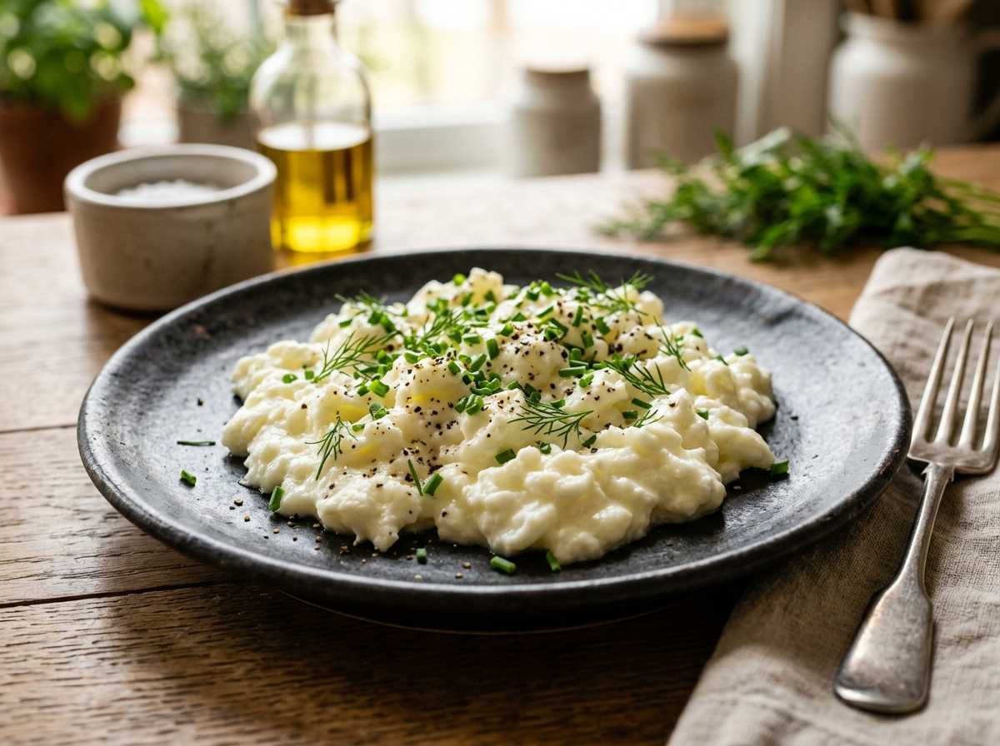

Нежнейший ресторанный омлет-скрэмбл с греческим йогуртом «Теос» (70 г) и молоком. Без сухой «резиновой» текстуры — тающие сливочные волны с гранулированным чесноком, свежим огурцом и колечками халапеньо.

В глубокой миске соедините 4 яичных белка (145 г), 70 г йогурта «Теос», 35 г молока, соль, свежемолотый перец и сушеный чеснок. Взбейте вилкой или венчиком 30–40 секунд до гладкой кремовой массы без крупных комочков.
Поставьте антипригарную сковороду на умеренно-средний огонь (важно не раскалять сковороду, чтобы белок не сгорел и не стал сухим). Сделайте 1–2 пшика масла из распылителя.
Вылейте смесь на сковороду. Подождите 15–20 секунд, пока нижний слой чуть-чуть схватится. Затем силиконовой лопаткой плавно и непрерывно сдвигайте массу от краев к центру, собирая нежные сливочные складки.
Готовьте скрэмбл суммарно не более 1.5–2 минут. Снимайте на тарелку, когда он еще слегка влажный и глянцевый: блюдо само дойдет до идеала за 30 секунд. Рядом выложите кружочки свежего огурца, колечки пикантного халапеньо и посыпьте свежей зеленью!
Чистый яичный альбумин при нагреве быстро сжимается и выталкивает влагу (эффект «резины»). Плотный греческий йогурт удерживает влагу и дает нежнейшую текстуру ресторанного омлета на сливках при минимальной калорийности.
Никогда не жарьте белки на сильном огне. Высокая температура мгновенно делает белок грубым. На среднем огне масса готовится бережно и сохраняет кремовую шелковистость.
Свежий сочный огурец дает идеальный хруст, а легкая остринка перца халапеньо великолепно оттеняет мягкую сливочную текстуру омлета.